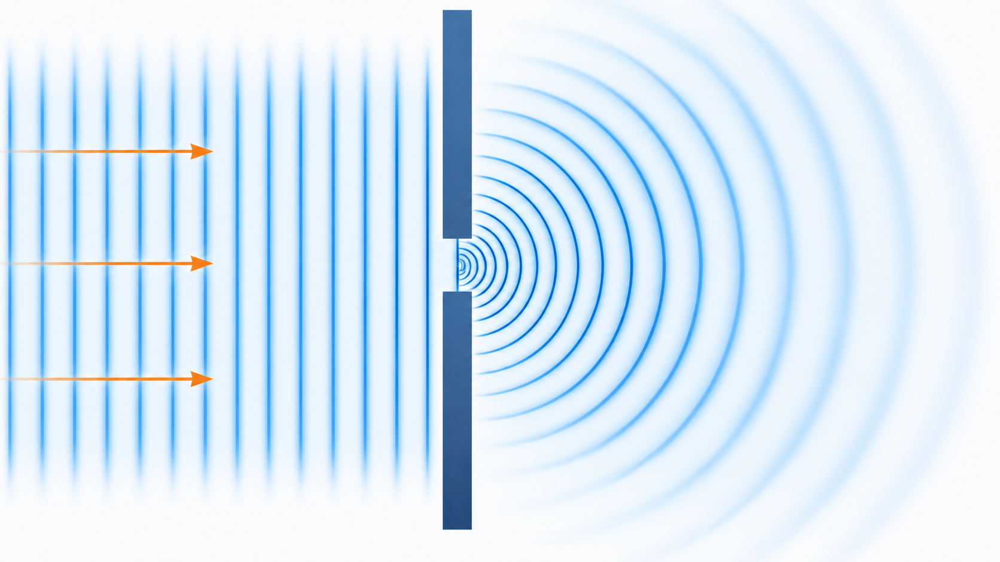
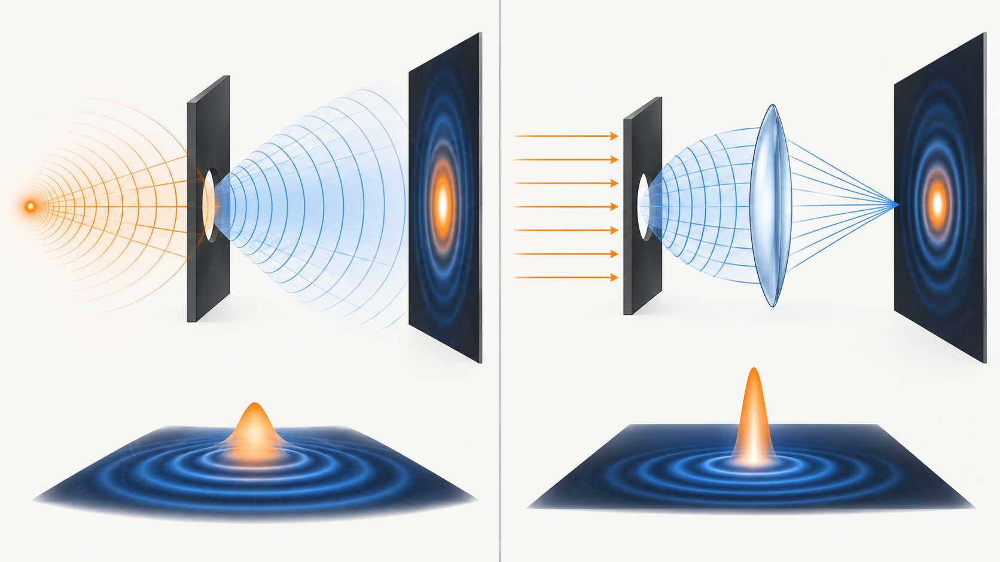
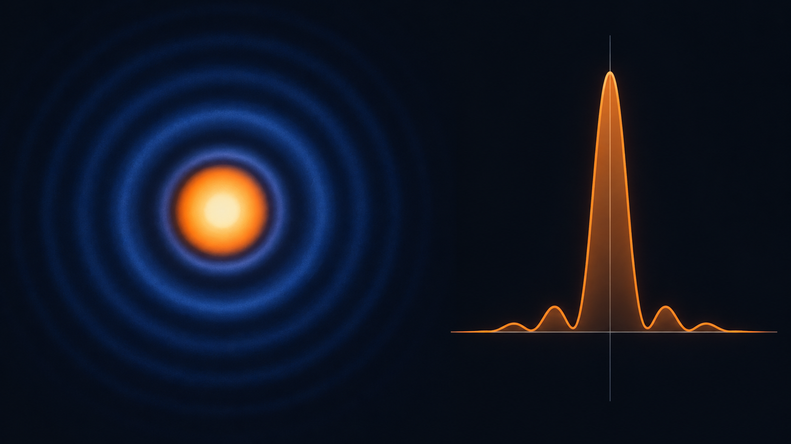
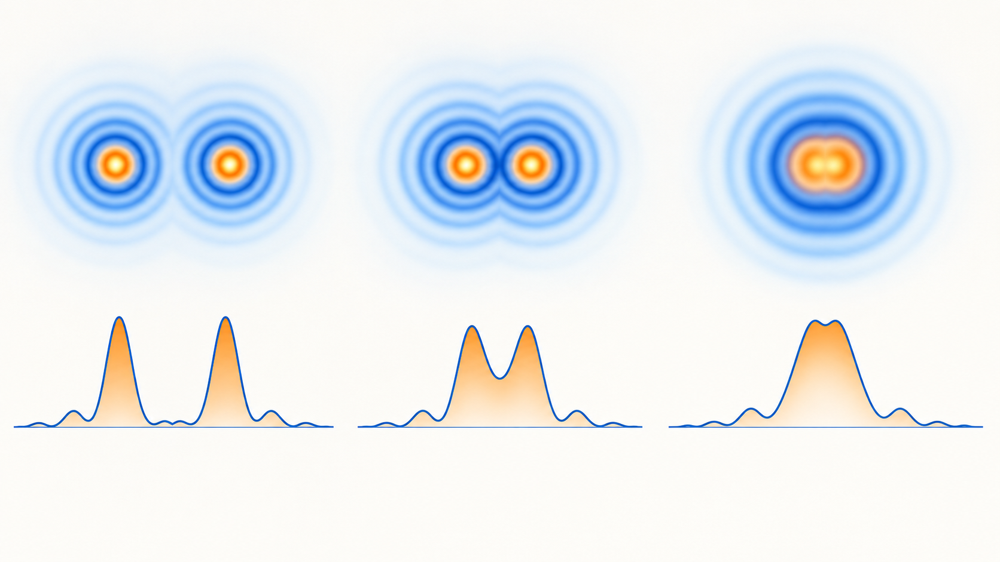
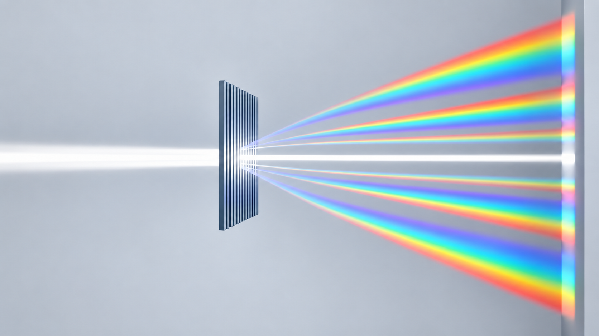

Livello intuitivo: Una luce puntiforme non diventa un puntino perfetto: una lente circolare produce una macchiolina luminosa con anelli più deboli. Due macchie troppo vicine si confondono.
Per essere maggiormente rigorosi: Il disco di Airy è il massimo centrale della figura di diffrazione, non tutta la PSF. Il limite di Rayleigh è un criterio convenzionale, non una soglia universale della percezione.
Obiettivi di apprendimento
- Distinguere i regimi di Fresnel e Fraunhofer.
- Descrivere il disco di Airy e il criterio di Rayleigh.
- Comprendere il ruolo della pupilla e dei reticoli di diffrazione.
Che cosa accade vicino a un’apertura
Un’onda non prosegue sempre come un fascio geometrico perfettamente delimitato. Quando incontra un’apertura o un ostacolo di dimensioni confrontabili con la lunghezza d’onda, si distribuisce anche nelle regioni che l’ottica geometrica considererebbe in ombra. Questo fenomeno è la diffrazione.
La figura osservata nasce dall’interferenza dei contributi provenienti dai diversi punti del fronte d’onda. Diffrazione e interferenza non sono quindi fenomeni separati: la diffrazione è una manifestazione dell’interferenza tra molti contributi.

Fresnel e Fraunhofer
Livello intuitivo: Vicino all’apertura, spostare lo schermo può cambiare molto la figura: è il comportamento tipico del regime di Fresnel. In campo lontano osserviamo soprattutto la distribuzione della luce nelle diverse direzioni: è il limite di Fraunhofer. “Distanza finita” non basta a distinguere i due regimi.
Per essere maggiormente rigorosi: Per un’onda incidente piana e monocromatica, apertura di scala trasversa e distanza di osservazione , usiamo il numero di Fresnel:
Cosa Vuol Dire?
Livello intuitivo: Non conta soltanto quanto è lontano lo schermo: contano anche la dimensione dell’apertura e la lunghezza d’onda. Se è molto piccolo, la distanza è abbastanza grande per l’approssimazione di Fraunhofer.
Per essere maggiormente rigorosi: è adimensionale; tutte le lunghezze hanno la stessa unità. Qui è il raggio per un’apertura circolare, oppure una semilarghezza caratteristica. Con illuminazione piana e propagazione parassiale, è la condizione di campo lontano. Nel regime di Fresnel si mantiene il termine di fase quadratico della propagazione. Con illuminazione divergente bisogna considerare anche la curvatura del fronte incidente e la distanza della sorgente. Una lente può formare la distribuzione di Fraunhofer nel proprio piano focale anche a distanza fisica finita.

Apertura circolare e disco di Airy
Una sorgente puntiforme osservata attraverso un’apertura circolare ideale non produce un punto matematico. Produce un massimo centrale circondato da anelli più deboli: la figura di Airy.
L’angolo del primo minimo è:
Cosa Vuol Dire?
Livello intuitivo: Il seno dell’angolo del primo anello scuro è 1,22 volte la lunghezza d’onda divisa per il diametro dell’apertura.
Un’apertura più grande restringe la figura ideale; una lunghezza d’onda maggiore la allarga.
Per essere maggiormente rigorosi: Apertura circolare libera, illuminazione uniforme, luce monocromatica e diffrazione di Fraunhofer. Per piccoli angoli in radianti.
Per piccoli angoli, . Nel piano focale di una lente, il raggio del primo minimo è:
Cosa Vuol Dire?
Livello intuitivo: Il raggio del disco centrale è circa 1,22 volte lunghezza d’onda per focale, diviso diametro dell’apertura.
Doppio diametro: raggio dimezzato. Doppia focale: raggio doppio sul piano immagine, ma non cambia il limite angolare a D fisso.
Per essere maggiormente rigorosi: È il raggio fino al primo minimo, non il diametro. La forma richiede coerenza tra e indice del mezzo; qui nel vuoto e sistema in aria, paraxiale.
La formula da sola esprime un angolo, non una distanza lineare.

Criterio di Rayleigh
Secondo il criterio di Rayleigh, due sorgenti puntiformi di uguale intensità sono appena risolte quando il massimo centrale di una figura coincide con il primo minimo dell’altra:
Cosa Vuol Dire?
Livello intuitivo: La separazione angolare di Rayleigh è circa 1,22 volte lunghezza d’onda divisa per diametro.
Un valore più piccolo consente di distinguere punti più vicini nel modello ideale. Raddoppiando D, questo limite si dimezza.
Per essere maggiormente rigorosi: Due sorgenti puntiformi incoerenti di uguale luminosità, apertura circolare ideale. Radianti; il criterio non include rumore, contrasto o percezione.
Per un oggetto a distanza e piccoli angoli, la separazione lineare minima è .
Una pupilla più grande riduce il limite imposto dalla diffrazione, ma nell’occhio reale fa emergere maggiormente le aberrazioni. Una pupilla molto piccola aumenta invece la diffrazione. La qualità migliore deriva quindi da un compromesso, non semplicemente dalla pupilla più grande possibile.

Reticolo di diffrazione
Un reticolo contiene molte fenditure parallele. I massimi principali soddisfano:
Cosa Vuol Dire?
Livello intuitivo: Il passo del reticolo per il seno dell’angolo dell’ordine m è m volte la lunghezza d’onda.
Colori diversi escono in direzioni diverse; un passo minore separa di più gli stessi ordini.
Per essere maggiormente rigorosi: Incidenza normale. d è il passo, non la larghezza della singola fenditura; un ordine esiste solo se .
dove è il passo del reticolo. Lunghezze d’onda diverse raggiungono massimi a diversi angoli, permettendo di separare lo spettro.

Esempio corretto
Con e :
Cosa Vuol Dire?
Livello intuitivo: Per luce di 550 nanometri e apertura di 2 millimetri, il limite ideale vale circa 0,000336 radianti.
È circa 1,15 minuti d’arco: il numero descrive una piccola separazione angolare, non una lunghezza sullo schermo.
Per essere maggiormente rigorosi: ; ; .
cioè circa minuti d’arco.